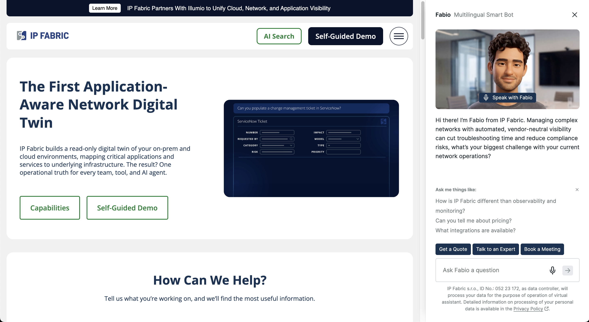
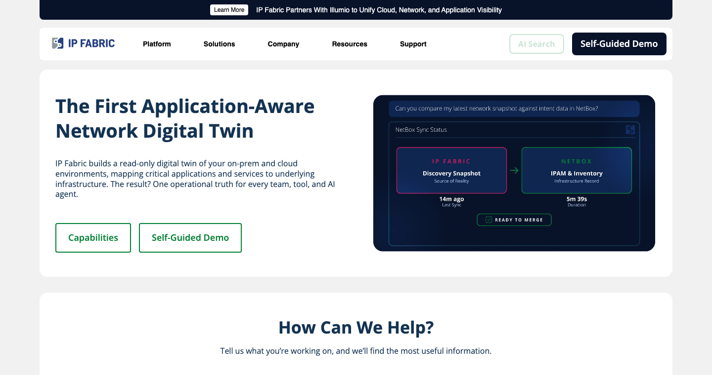
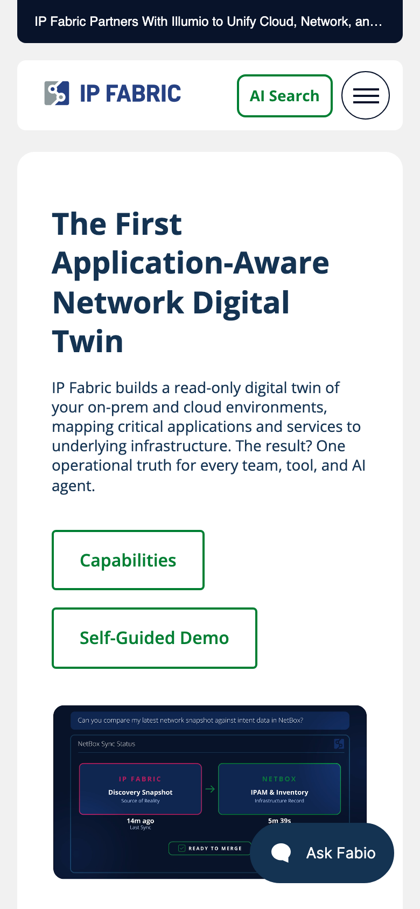
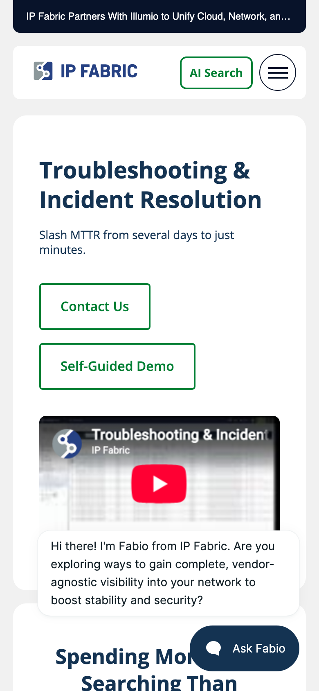
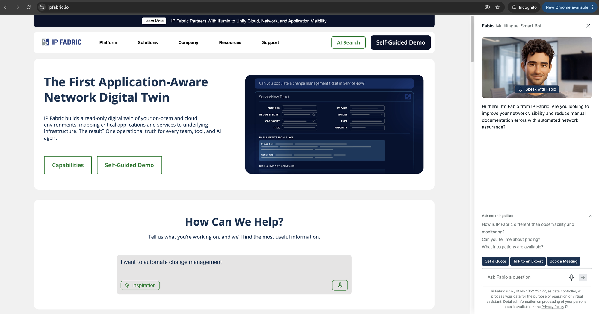
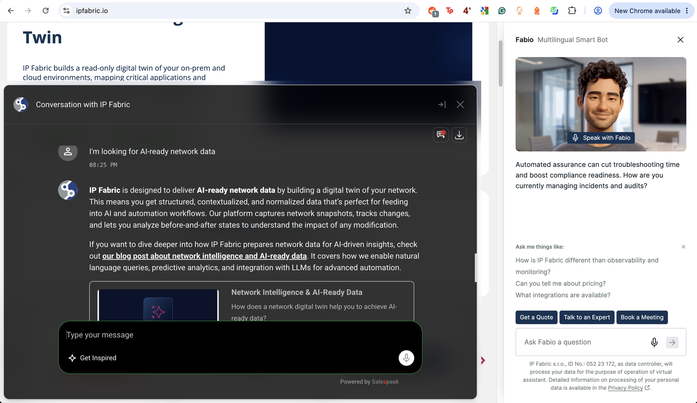

Website Teardown
A fast, well-hosted site whose top layer works against the one thing the site exists to do: turn prospects (network engineers and managers) into demos.
The rebuild put a fast, technically clean foundation under a storefront that undercuts it. The site is quick, but the experience on top hides the product, interrupts the visitor, and hands the buyer to a bare third-party form at the exact moment they lean in.
For a company whose entire promise is trustworthy, evidence-grade network data, the homepage asks people to take the product on faith. Judged the way a network engineer actually evaluates a tool, conversion first, the rebuild trades away hard-won signals: you cannot see the software, an AI chatbot opens itself and will not leave, and the primary demo path leaves the domain entirely. None of this is an infrastructure problem. It is front end, content and configuration, so it is fixable without re-platforming.
For a network-assurance platform, you never actually see the software.
The hero is a stylised, synthetic mock; the rest leans on generic icons and suggestive, low-fidelity diagrams. A technical buyer's trigger is "show me it works", and the flagship page does not.
share-eu1.hsforms.com, unbranded.Mobile is a relative strength. Validated in Chrome DevTools device emulation, the site reflows cleanly to a single column with a hamburger menu, large tap targets and no horizontal overflow. The foundation is sound; the work is on the layer above it.
Under the hood the rebuild is genuinely sound. The server responds quickly (TTFB about 202 ms), the homepage DOM is lean, there is an llms.txt for AI crawlers, and the hosting stack is modern with HTTP/3. The instinct that the site "loads fast" is correct at the network layer.
That is exactly what makes the regression a front-end and funnel problem rather than an infrastructure one: a fast pipe is delivering a page that undersells a serious product. This report is deliberately conversion-first, because a B2B marketing site exists to turn prospects into demos and pipeline. Every other discipline (performance, accessibility, motion, typography, SEO and AEO) is judged by whether it helps or leaks that goal. Findings are grouped by discipline, each with a stable ID (for example LNK-01) so they can be referenced directly, and ranked by severity in the backlog. This diagnoses and prioritises; it does not prescribe fixes.
This teardown covers the site's experience, build quality and technical execution. It deliberately does not review the copy, messaging or positioning, which are being handled separately.
Each discipline links to its section; every count links to the first finding of that type.
A B2B marketing site exists to convert. Everything else ladders up to this.
On a fresh desktop visit to the homepage the "Fabio, Multilingual Smart Bot" panel opens full-height, unprompted, and stays pinned through the whole scroll, about 25% of the viewport. Reproduced independently after clearing its suppression cookie. A bot should open on click, never on load.
On mobile the same widget collapses to a small "Ask Fabio" pill, so the aggressive auto-open is a desktop-specific choice that could simply match the mobile behaviour.

On the guided-demo page, "Start Demo" and "Self-Guided Demo" are <a target="_blank"> to share-eu1.hsforms.com (six such CTAs on that page). The visitor lands in a new tab on a bare HubSpot domain, with no branding, no navigation, no way back, and a required "allow ipfabric.io to store and process my personal data" checkbox. This is the highest-friction point in the funnel. See also FRM-01.
Both Qualified (js.qualified.com) and Salespeak (app.salespeak.ai, the Fabio bot) load. Duplicated engagement widgets confuse the path and add weight.
Mockups, icons and low-fidelity diagrams stand in for the real UI. This is the biggest trust and conversion problem, and it recurs across the site.
Did the people who built the site actually use, or even see, the product?
Taken together, the reliance on synthetic mockups, generic icons and placeholder diagrams, with almost no genuine screenshots of the running software, invites the question. This is an inference from what is on the page, not a statement of fact, but it is the impression a technical buyer forms, and it is worth the team putting beyond doubt with real product imagery.
The hero panel is a stylised, designed illustration (a mock "NetBox Sync Status" or "ServiceNow Ticket" diagram with placeholder rows), not a screenshot of the running product. For a network-assurance tool, the first impression shows an idea of the product rather than the product.

Feature grids use generic thin-line icons; the "Build Integrity Into Every Workflow" section on the homepage uses faint greyed mock screenshots. Where real product does appear (a troubleshooting YouTube demo, an APP-CRM topology diagram on solution pages) it is inconsistent and below the fold.
Solution pages carry more real product than the homepage, so the credibility gap is worst exactly where first impressions form.
Separate from the off-domain, new-tab handoff itself (that is CV-02), the destination is a bare white form on hsforms.com: no logo, no navigation, no reassurance, and a consent checkbox with no surrounding explanation. The best-practice alternative is an embedded, branded form on the IP Fabric page. As it stands this raises abandonment and reads like a phishing hop.
Validated in Chrome DevTools device emulation (390 px, mobile media queries active, so this is a genuine result rather than a screenshot artifact): document scrollWidth equals the 390 px viewport with no horizontal overflow on the homepage and on inner solution pages. The layout collapses to a single column with a hamburger menu, large stacked buttons, the hero mock scaling to fit, and the chat collapsing to a small "Ask Fabio" pill rather than taking over the screen.
Minor: a proactive Fabio text bubble also appears on mobile (a smaller version of CV-01), and the announcement bar truncates with an ellipsis, which is acceptable.


An autoplay <video>, two Swiper carousels, a typewriter effect in the search box, and the chat launcher and panel animating in, all competing above the fold on desktop.

The "How Can We Help?" AI search box auto-types example prompts by itself, with no click required, on both desktop and mobile (confirmed under device emulation). Animating a primary input is distracting and can read as text a user did not enter.
A prefers-reduced-motion query is present (good), but the volume of motion means it should be honoured more aggressively.
The computed font-family on <body> resolves to bare sans-serif, the operating-system default. Headings use Open Sans; body falls to the system font, which is inconsistent and generic.
The pre-rebuild site loaded and used Inter as its body typeface (--wp--preset--font-family--body: Inter, sans-serif, with 35 to 115 CSS references across snapshots from 2025 through June 2026). The new site dropped Inter entirely; only Open Sans loads now. Inter to Open Sans plus an unstyled system sans is a step down in modernity and intent.
Aside: IP Fabric's own document and brand collateral uses Inter, so the new site is off-brand against its own materials. Fair balance: the old site over-loaded fonts (Inter, Open Sans, Playfair Display, a handwriting face), so the goal is a considered single system, not more fonts.
A leftover Avenir LT Std @font-face is declared with no served font files.
Seven unique internal links on the homepage open with target="_blank" (injected by JavaScript at runtime, so absent from the raw HTML). Opening internal links in new tabs breaks the back button and spawns tab clutter. The full list:
/blog/unlocking-aiops-and-infrastructure-automation//blog/how-under-armour-uses-ip-fabric-to-keep-big-projects-moving//blog/cmdb-health-ip-fabric-servicenow-integration//resource/major-league-baseball-a-network-automation-home-run//resource/u-haul//resource/modernizing-change-management//compliance-hub/External links (LinkedIn, YouTube) opening in a new tab is acceptable; internal ones should not.
51 target="_blank" links site-wide omit rel="noopener" or noreferrer (reverse-tabnabbing and performance hygiene).
761 of 1,313 crawled images (488 of 834 on the 71 real-content pages) have missing or empty alt; the Compliance Hub page alone is 198 of 256. A broad WCAG 2.2 §1.1.1 failure with SEO consequences.
About 10 real content pages (for example network-assurance-security-compliance-controls, press-center, the resource-type taxonomy pages) have no <h1>; the homepage jumps to an <h5> with no intervening levels.
The viewport does not block pinch-zoom and reduced motion is honoured in CSS. Keep these.
The homepage makes about 105 requests across roughly 25 third-party hosts and ships 57 <script> tags (30 external) plus 12 stylesheets, loading jQuery (legacy in 2026), GSAP and Swiper. Server response is fast (TTFB 202 ms; DOMContentLoaded 519 ms; load 2,266 ms), so the weight is in the build, not the host.
None of the 25 homepage images use loading="lazy", and 4 hero images have no width or height (layout-shift risk).
699 inline style attributes on the sample (about 10 per page), adding weight and working against a strict Content-Security-Policy.
Missing alt at scale (A11Y-01), roughly 15 to 20 real pages with no meta description, about 14 missing a canonical, and about 10 with no H1.
Blog pagination pages all share the title Blog - IP Fabric, which is not differentiated for search.
Good title length (59 characters), a canonical, 14 OpenGraph tags, 2 JSON-LD blocks, a single H1, and lang="en-US". Extend these to all templates.
Buyers now ask AI assistants (ChatGPT, Claude, Perplexity, Google's AI overviews) to shortlist and research vendors, and those assistants ingest this site directly. AEO/GEO is about being accurately citable and comparable by machines, not only ranking in blue links. A product an agent cannot cleanly describe or price is a product it leaves off the shortlist.
AI-crawler access (robots.txt), the structured data an agent can lift (schema.org), FAQ markup, whether content is readable without JavaScript, and whether the core buying facts (what it is, what it costs) are machine-extractable.
Real strengths to build on. The site carries extensive schema.org markup (Organization, BreadcrumbList, WebSite with SearchAction, VideoObject, ImageObject) and, importantly for answer engines, 18 FAQPage blocks with roughly 95 Question and Answer pairs. Content is server-rendered, so an agent can read it without executing JavaScript, and robots.txt neither blocks nor throttles GPTBot, ClaudeBot, PerplexityBot or Google-Extended, so assistants are free to ingest it.
The llms.txt is a Rank Math auto-generated link list: a title, a sitemap link and a list of blog posts. It does not state what the product is, who it is for, the problem it solves, or a capability summary, so it adds little over the XML sitemap. A hand-written llms.txt that leads with a crisp product definition and the key facts a buyer needs would give answer engines a clean, quotable source.
The site marks itself up as ProfessionalService (56 instances), not SoftwareApplication or Product. When an assistant is asked to compare network-assurance tools, product schema (category, features, offers, supported platforms, ratings) is what it reads to place a vendor in a shortlist. Using service rather than product markup leaves IP Fabric under-described exactly where machine comparison happens.
The pricing page ("Simple Pricing For Complex Networks") carries only "Contact Us", with no figures, tiers or units. Asked "how much is IP Fabric" or "which network-assurance tool fits a 5,000-device network", an agent finds nothing to cite and cannot rank the product on cost. Even indicative ranges, tier names, or a "starts at" figure would make it answerable and comparable.
Around 13 or more advertising, analytics and session-recording third parties load: Reddit, AdRoll, Bing, DoubleClick, LinkedIn, X (Twitter), Google Tag Manager, Microsoft Clarity, Smartlook, Salesloft, Qualified, Salespeak and HubSpot-EU. For an EU-headquartered company (IP Fabric s.r.o.), this is a GDPR and e-Privacy consent concern as well as a performance one.
Once a visitor engages the central AI chat, the expanded "Conversation with IP Fabric" window shows a "Powered by Salespeak" footer. Third-party vendor branding on a primary conversion surface should be white-labelled or removed.

Both Microsoft Clarity and Smartlook record sessions, which is redundant and doubles the privacy surface.
The document is served cache-control: no-store, no-cache with a DYNAMIC edge-cache status; only the origin cache is hitting. Full-page edge caching is available on this stack and unused.
A managed WordPress stack behind a global CDN with HTTP/3. A strong base to build on.
| # | ID | Severity | Finding |
|---|---|---|---|
| 1 | CV-01 | Critical | Fabio chatbot auto-opens and pins over the page |
| 2 | CV-02 | Critical | Demo CTAs open HubSpot form off-domain in a new tab |
| 3 | A11Y-01 | Critical | About 58% of images have no alt text |
| 4 | VIS-01 | High | Hero product visual is a synthetic mock |
| 5 | VIS-02 | High | Suggestive low-fidelity imagery instead of real UI |
| 6 | TYP-01 | High | Body copy has no web font (system fallback) |
| 7 | TYP-02 | High | Regression from Inter to Open Sans |
| 8 | NAV-01 | High | Inconsistent nav with dead-end menu roots |
| 9 | LNK-01 | High | Seven same-domain links open in new tabs |
| 10 | MO-01 | High | Four or more simultaneous motion sources on the hero |
| 11 | PERF-01 | High | 105 requests, roughly 25 third parties, jQuery, GSAP, Swiper |
| 12 | SEO-01 | High | Missing alt, meta descriptions, canonicals, H1s |
| 13 | MAR-01 | High | Tracker sprawl and GDPR consent exposure |
| 14 | CV-03 | Medium | Two competing chat systems |
| 15 | VIS-03 | Medium | Uneven imagery quality, worst on homepage |
| 16 | FRM-01 | Medium | Off-domain form lacks trust context |
| 17 | LNK-02 | Medium | 51 new-tab links missing noopener |
| 18 | A11Y-02 | Medium | Missing and skipped headings on key pages |
| 19 | PERF-02 | Medium | No lazy-loading, CLS risk |
| 20 | SEO-02 | Medium | Duplicate blog titles |
| 21 | AEO-01 | Medium | llms.txt is auto-generated boilerplate |
| 22 | AEO-02 | Medium | No Product / SoftwareApplication schema |
| 23 | AEO-03 | Medium | Pricing not machine-extractable |
| 24 | MAR-02 | Medium | "Powered by Salespeak" leaking on engaged chat |
| 25 | MAR-03 | Medium | Double session-recording (Clarity and Smartlook) |
| 26 | CFG-01 | Medium | HTML not edge-cached |
| 27 | MO-02 | Medium | Gimmicky auto-typing search placeholder |
| 28 | TYP-03 | Low | Dead Avenir LT Std font-face |
| 29 | MO-03 | Low | Reduced-motion exists but under-used |
| 30 | PERF-03 | Low | 699 inline style attributes |
The foundation is sound. The work is on the layer above it.
Stop the top layer, an uninvited bot, invisible product, off-site forms and generic type, from undercutting a fast, modern, well-hosted site.
Every finding is backed by a screenshot, a DOM or HTML fact, or a measured number, not opinion.
httrack, rate-limited, to a temporary directory (not committed): raw HTML of about 70 real content pages.audit_static.py (reusable): site-wide alt, heading, meta and link-target counts.mobile_check.py, reusable): measured scrollWidth versus viewport and captured true emulated renders.curl -I: stack fingerprint and cache behaviour.